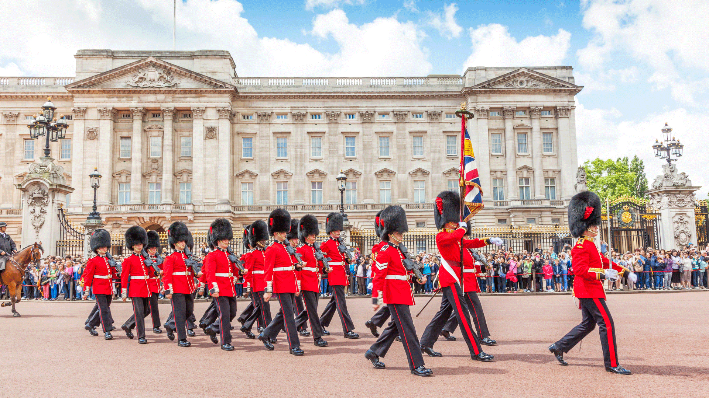
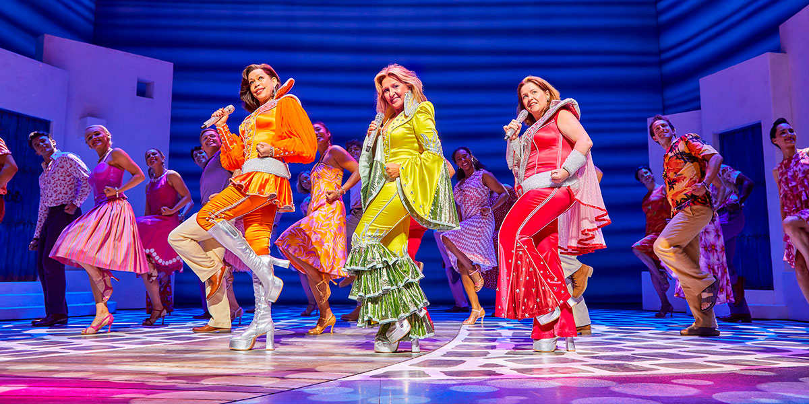

For History Buffs
- Imperial War Museum
- Churchill War Rooms
- London Transport Museum

English Culture
- Changing of the Guards
- Shakespeare's Globe
- Tower of London
- St Paul's Cathedral

Attractions for All Ages
- London Zoo
- Madame Tussaud's Wax Museum
- West End Shows

Attractions I'd Skip
- Hyde Park – try Greenwich Park instead for its beautiful hilltop views.
- Riding the London Eye – visit the Sky Garden for free panoramic views of London.
- Buckingham Palace – if you're short on time, it's skippable beyond the changing of the guard.
Watch: Top Attractions in London